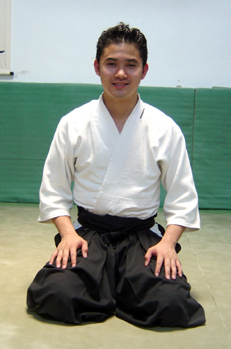

O cultivo do REIJI (etiqueta) no seio do AIKIDO é algo que chama a atenção de todos, fruto da herança Samurai (a palavra vem de “saburau”, que significa aquele que serve), muito embora seja uma arte marcial jovem tem suas raízes fixadas na tradição da cultura Japonesa. A classe Samurai nasceu na era do Japão feudal, eram guerreiros que lutavam por seus senhores e seguiam um rígido código de conduta, não escrito, chamado de “Bushido”. Como crescessem constantemente os conflitos pela posse de terras, cada vez mais aprimoravam-se as técnicas de combate e como várias eram as famílias feudais, várias também eram as técnicas desenvolvidas nos feudos, dando ensejo ao surgimento de diversos sistemas e estilos de luta o que como conseqüência fez surgir as chamadas escolas ou RYU, um desses sistemas era o DAITORYU AIKIJUJUTSU.
Morihei Ueshiba nascido em 14 de Dezembro de 1883 em Tanabe, uma pequena vila Japonesa de pescadores e camponeses, no seio de uma família bastante religiosa que professava o Budismo Bukyo-Shingon-Shiu, seu nome “Morihei” que significa “PAZ ABUNDANTE” chega a ser profética. Em 1898 Morihei deixou sua casa e viajou para Tóquio onde começou a instruir-se em artes marciais principalmente Yagyu Shinkage Ryu (Estilo de Espada), Hozoin (Estilo de Bastão Longo) e Tenjin Shinyo Ryu (Jujutsu). Aos 20 anos mesmo com baixa estatura (1,60 m), ingressou no exército onde seu desempenho era destaque principalmente nas artes de combate em particular o Yu Ken Jutsu (arte do fuzil com baioneta) também é desta época que começou a ser conhecido por seus feitos, que até o final de seus dias o acompanharam e até hoje servem de inspiração para praticantes em todo mundo. Aos 25 anos de idade recebeu o Menkyô Kaiden (certificado de proficiência) em Yagyu Ryu JyuJutsu. O diferencial entre Morihei Sensei e outros grandes mestres reside no fato de sua vida sempre estar ligada à natureza, principalmente agricultura, atividade que por sinal, desempenhou até o fim de seus dias. Em certa época de sua vida conheceu Mestre Sokaku Takeda, último representante da família Takeda detentora do conhecimento relativo ao DAITORYU AIKIJUJUTSU que foi decisivo para o nascimento futuro do AIKIDO.
Em 1919 Morihei Ueshiba tomou conhecimento que seu pai encontrava-se em grave estado de saúde tendo então viajado à Tanabe para encontrá-lo, quando ao passar por Ayabe ficou sabendo que lá encontrava-se Onisaburo Degushi, líder da seita Omoto kyu (a qual deu origem a Seisho No Iê) inspirada no Shintoísmo tendo então procurado-o afim de obter bênçãos para o restabelecimento de seu pai, porém ao chegar à Tanabe tomou conhecimento de seu falecimento. Após certo tempo retornou para reencontrar Onissaburo onde aí começaram a serem estabelecidos os fundamentos espirituais e filosóficos do AIKIDO, portanto, tudo que hoje o AIKIDO se tornou deve-se a síntese de tudo vivenciado por Morihei Sensei ao longo de sua vida, mas principalmente ao seu contato com o Daitoryu através de Sokaku Takeda e a Omoto Kyu através de Onissaburo Degushi. Em 1927 abriu em Tóquio o “Dojo Ueshiba” que era freqüentado inclusive por altos Oficiais da Marinha Japonesa. Em 1931 cresceu tanto que chegou a abrir um Dojo permanente em Tóquio o Dojo Kobukan, é essa a época de famosos praticantes como Gozo Shioda (fundador do Yoshinkan AIKIDO). Nessa época abandonou o termo Bujutsu e passou a nomear sua arte de Aikibudo. Em 1939 solicitou oficialmente o registro de sua organização como Kobukai.
Em 1941 houve a eclosão da II Guerra Mundial e em 1942 uma das atitudes tomadas pelo governo Japonês foi tentar unificar os diversos seguimentos de artes marciais em uma única entidade, nessa época Morihei compreendeu que o nome Kobukan Aikibudo não seria mais conveniente, pois poderia sugerir que sua arte seria um ramo de uma arte chamada Kobukan, foi aí que surgiu o termo AIKIDO, passando, assim, a ser conhecida a partir de então:
Até hoje Morihei Ueshiba é lembrado como “O Sensei” que significa “Grande Mestre” é o KAISO (fundador) e primeiro DOSHU (dono do estilo). Em 26 de Abril de 1969 O SENSEI Morihei Ueshiba concluiu sua missão na terra e deixou o legado do AIKIDO para seu filho KISHOMARU UESHIBA que foi o segundo Doshu. Hoje o AIKIDO é uma respeitada arte marcial aonde sua sede mundial, a Fundação AIKIKAI, localiza-se em Wakamatsu-Cho, Shinjuku-KJ em Tóquio no Japão é presidida pelo neto de O Sensei o atual Doshu MORITERU UESHIBA com centenas de Dojos afiliados espalhados em todo o mundo e milhares de praticantes.
"O Aikido é um Budo que visa vencer a si próprio e não os outros”. Esta é a síntese de uma profunda filosofia desenvolvida pelo Kaiso (fundador) Morihei Ueshiba, denominada Massakatsu Wagatsu Katsu Hayabi. O Aikido, portanto, é algo além do Budo, pode ser visto como uma filosofia de vida na qual a pessoa passa a viver em unidade e harmonia com a natureza, aceitando e respeitando as diferenças que existem entre as pessoas. Um exemplo prático: Se um oponente nos atacar com um soco, deixemo-lo seguir a sua direção, bastando não sermos atingidos. Se alguém nos ofender, devemos deixar que fale. É como viver o kyuzenkai (princípio contido nas orações do budismo) que pode ser traduzido como “Momento único (ímpar) de união interna equilibrada”.
No Aikido existe um princípio de fundamental importância que envolve o respeito e a “dívida” de gratidão, em japonês chamamos isso de Guiri Ninjo (princípio inexistente na cultura ocidental). “No Aikido, quando acontece de algum aluno se esquecer dessa premissa e cometer o Uraguiri (ingratidão) intitulando-se professor em outras searas, dizemos que o mesmo está divulgando o Djado, ou somente técnicas de luta”.
Nome: Marcos Roberto Severo Rosa
Idade xxxxx
Inicio dos Treinos: 2009
Graduação: Shodan
Pastor, Bacharel em Teologia, com especialização em Exegese (Grego Koinê), pelo Seminário Teológico
Batista do Oeste do Brasil.Técnico Judiciário do TRT 24ª Região. Shodan em Aikido em nove anos de treino.
Sandan de Karatê Shotokan pela academia União dos Sargentos, com o Shihan 6º Dan, Antonio de Moura ( Toninho) com quarenta anos de treino. Árbitro da federação de Karatê MS.Instrutor de Tonfa, BET (Bastão Expansivo Tático), Algemação e abordagem tática pela empresa SOTAI de São Paulo.
Sensei: Willians Alves de Souza
Idade: 39 Anos
Inicio dos Treinos: 2009
Graduação: Shodan
Bancário,
Formado em administração de empresas
Iniciando em 2009 no aikido e graduado shodan em 2016.
Atualmente instrutor de treinos para iniciantes e graduados.

Sed ut perspiciatis unde omnis iste natus error sit voluptatem accusantium doloremque laudantium, totam rem aperiam.
Eaque ipsa quae ab illo inventore veritatis et quasi architecto beatae vitae dicta sunt explicabo.
Manual do aluno:
O Manual do aluno contem uma compilação de informações sobre o aikido e suas tecnicas com varias obervações a cerca dessa maravilhosa arte Marcial!
DOJOS:
Em Campo Grande os interessados podem encontrar os Dojos Heiwa em dois locais :
No Centro da Cidade na Rua 13 de maio, 4145 - Campo Grande - MS com a Travessa Cel Mario Pinto Peixoto.
Contamos com um amplo espaço equipado com:
Ainda contamos com um tatame de 126 metros de área com espessura de 40mm para garantir a melhor experiência durante as praticas seja no taijutso técnicas desarmadas ou kenjutso utilizando armas tais como Bokken(espada) , Jo(bastão) , Tantos(facas) , kodashis e Shinais. Possuímos convênios com o sindicato dos policiais federais, policiais rodoviários federais e oficiais da pm.
--------------------------------------- O início da Rua 13 de Maio, na altura do bairro São Francisco, exibe vários galpões imensos que há muitos anos eram considerados locais com papel importante na economia da cidade. Com o tempo, eles foram perdendo função e alguns acabaram demolidos e deram espaço a novas construções. Mas no início deste ano, um desses locais históricos teve valor reconhecido e foi revitalizado, ganhando nova cara e nova utilidade. Fechado desde o início da década de 1980, o galpão foi cedido a um grupo de praticantes de Aikido, que se juntaram para colocar a mão na massa e deixar o prédio com cara de novo. Logo na fachada é possível ver o antes e depois significante. A frente do galpão estava inteiramente pichada e com aspecto de abandono. Mas bastou uma lixadeira e algumas pessoas com braços fortes e disposição para que cada pedacinho do paredão de tijolos, agora à vista, fosse restaurado. "Fizemos questão de manter o estilo rústico e preservar a originalidade da obra, por isso que apenas lixamos os tijolos, não passamos nenhum produto a mais", garante Celso Farias, um dos voluntários na obra e também praticante de Aikido. As duas portas de ferro que compõem a entrada do galpão também estavam bastante deterioradas e ganharam apenas uma pintura na mesma cor da tinta que já estava quando receberam o espaço. Depois de tudo pronto, a fachada ganhou símbolos do Aikido feitos em madeira e que foram pendurados nos tijolos. Detalhes que fizeram toda a diferença na nova cara do galpão. "A ideia de preservar a arquitetura histórica tambem foi uma das preocupações, mantendo o elo com o passado", ressalta Fábio Yamasato, herdeiro do galpão. A restauração começou em janeiro deste ano e a parte de dentro também ganhou um banho de tinta nas paredes que estavam encardidas por causa da sujeira. O piso vermelho, que estava coberto pela poeira, também foi limpo e pintado de cinza. O resto, como estrutura, madeiras do teto e telhas foram mantidos os originais. História - O galpão foi cedido pela família de Fábio Yamasato, que é praticante do Aikido. "Meu avô chamava-se Yoshimatsu Yamasato. Ele veio do Japão muito jovem e começou a vida trabalhando na lavoura. Com o desenvolvimento da economia e dos negócios, em meados dos anos 1960, ele e seus três irmãos montaram um armazém que beneficiava arroz. Descascavam e ensacavam o grão para venda por atacado", conta Fábio. Por volta dos anos 1980, também pelas mudanças econômicas, os negócios não iam bem e a família decidiu encerrar a empresa. Desde então, o antigo armazém, que fez história em Campo grande como tantos outros localizados na rua 13 de Maio, permaneceu fechado. O avô de Fábio faleceu em 2014 e a família dele herdou o salão. "Em dezembro de 2016, conversando com os amigos que praticam Aikido e oferecemos o salão para instalação da nossa associação", explica Fábio. O Aikido é uma arte marcial japonesa que mistura defesa pessoal com filosofia oriental da paz e equilíbrio. E a parceria da família de Fábio com a associação dos praticante da arte marcial é uma forma de homenagear o patriarca. "Na cultura japonesa, a lembrança, respeito e culto aos antepassados é muito presente. Então, acreditamos que a nova utilização do espaço é motivo de orgulho para meu avô, ele estaria muito feliz com este projeto se estivesse vivo". fonte : https://www.campograndenews.com.br/lado-b/arquitetura-23-08-2011-08/galpao-que-ha-decadas-servia-para-ensacar-arroz-e-restaurado-na-base-do-mutirao autor: Mariana LopesJoin our mailing list to receive updates on new arrivals and special offers.